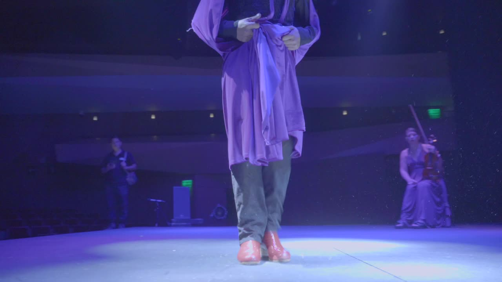
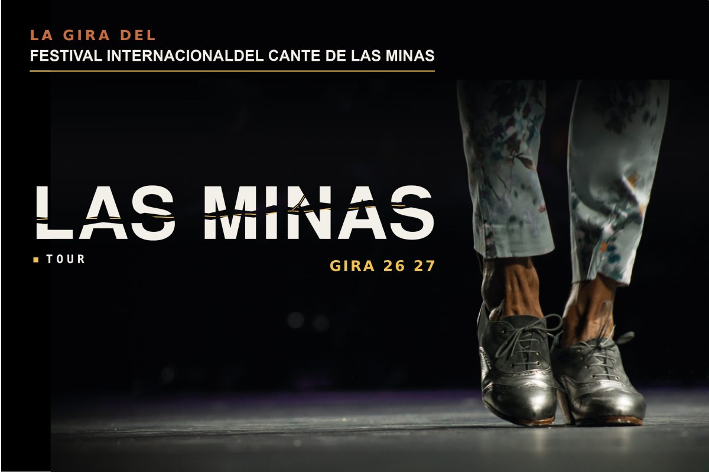
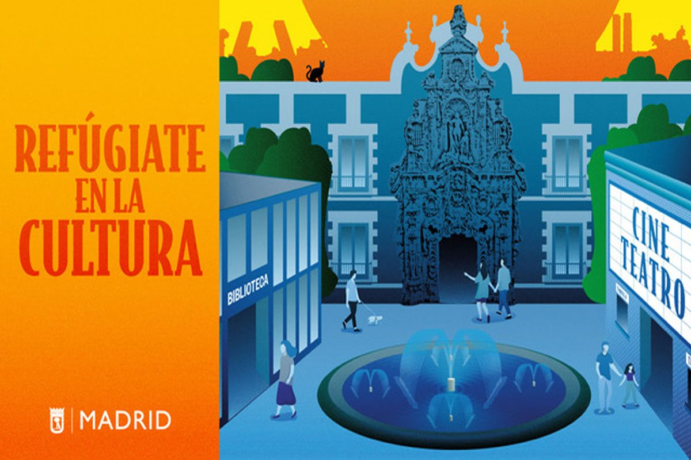
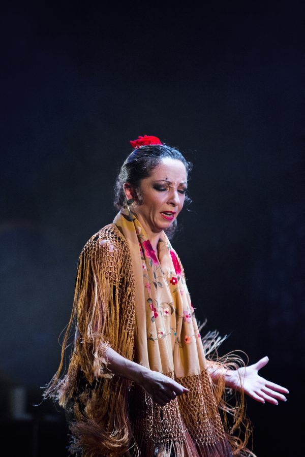

Producción de espectáculos de flamenco
Creamos conceptos artísticos exclusivos para teatros, giras y empresas. Esta temporada, la novena de Flamenco Real en el Teatro Real, del 28 de octubre al 25 de junio.
Temporada 2026-27 en tres producciones
-
Flamenco Real, en el Teatro Real
Nueve producciones y 31 espectáculos en el Salón de Baile de Isabel II, del 28 de octubre al 25 de junio. Abre el cantaor Arcángel. Ver Flamenco Real · Descargar el Libro de Temporada

-
Las Minas Tour, de gira por España
La gira del Festival Internacional del Cante de las Minas: nueve artistas bajo la dirección artística de Eduardo Guerrero, en grandes teatros de España. Ver Las Minas Tour

-
Flamenco en seis museos de Madrid
Patrocinamos de nuevo Refúgiate en la Cultura, del Ayuntamiento de Madrid: flamenco en verano, de 15 a 17 h. Ver el programa

Espectáculos y servicios
Desde 2011 llevamos el flamenco a teatros, festivales, barcos y empresas, en España y fuera.
- Authentic FlamencoGira por 21 ciudades de Estados Unidos y Canadá
- Fiesta FlamencaBaile y cena degustación, coproducido con IFEMA Madrid Live
- Seven SeasCartagena, Almería, Málaga y Cádiz a bordo del bergantín Atlantis
- Summer Flamenco ExperienceTres noches de agosto en Trips Summer Club, La Manga
- Eventos corporativosDel Círculo de Bellas Artes de Madrid al Museo de Arte Moderno de Chile
- GirasNuestros espectáculos, de abril a octubre por el mundo
- Producción audiovisualFarruquito en el Teatro Real, 1 h 53 min


Clientes de SO-LA-NA y prensa
Empresas con las que trabajamos: el hospitality por excelencia, de Iberia e InterContinental al Teatro Real.

SO-LA-NA Entertainment desde 2011
SO-LA-NA Entertainment es referente en la creación y producción de espectáculos exclusivos. Desarrollamos experiencias para que trasciendan en el arte flamenco, el escénico y el musical en general, persiguiendo la singularidad, la brillantez y la autenticidad en su puesta en escena.
En 2011 iniciamos nuestra andadura con la internacionalización del Festival del Cante de las Minas con “Las Minas Flamenco Tour”, espectáculo que se presentó en Japón, India y en diversas ciudades europeas y está reconocido como Marca España.
Formamos parte de Amigos de Solana, una comunidad internacional para los amantes del sol, del flamenco, del vino, del aceite de oliva, de la moda y del arte con herencia española.

Flamenco Real en vídeo
A la izquierda, un resumen de Flamenco Real. A la derecha, Eduardo Guerrero con su Desplante en el Teatro Real de Madrid.